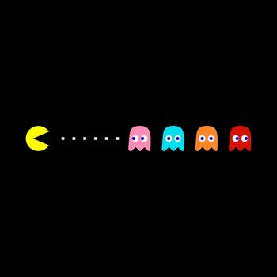

Galeria de Imagens
Explore imagens organizadas por categoria sobre videogames e Inteligência Artificial.
Games Clássicos
Os jogos que definiram gerações e marcaram a história dos videogames:
-

Pac-Man (1980)
-

Super Mario Bros. (1985)
-

Tetris (1984)
-

Sonic the Hedgehog (1991)
Games Modernos
Títulos recentes que usam tecnologias avançadas de gráficos e IA:
-

Minecraft — Geração Procedural
-

F.E.A.R. — IA Tática
-

The Sims — IA Autônoma
-

No Man's Sky — Mundo Infinito
Personagens Famosos dos Games
Personagens icônicos que marcaram gerações de jogadores:
-

Mario — Nintendo
-

Master Chief — Halo
-

Lara Croft — Tomb Raider
-

Link — The Legend of Zelda
Consoles ao Longo do Tempo
A evolução do hardware que tornou os games possíveis:
-

Atari 2600 (1977)
-

Nintendo NES (1983)
-

PlayStation 1 (1994)
-

PlayStation 5 (2020)